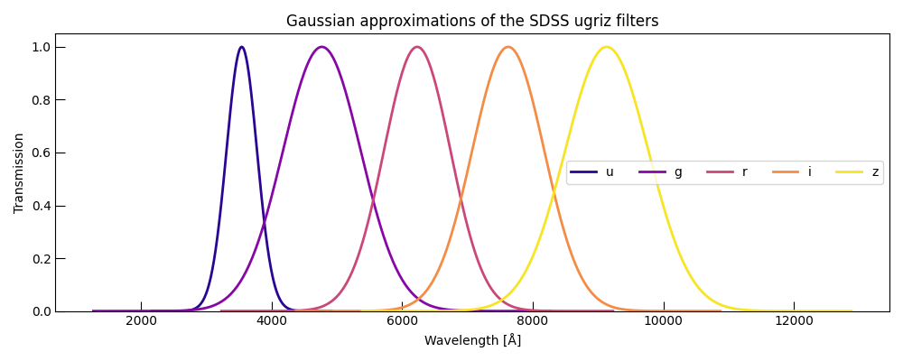
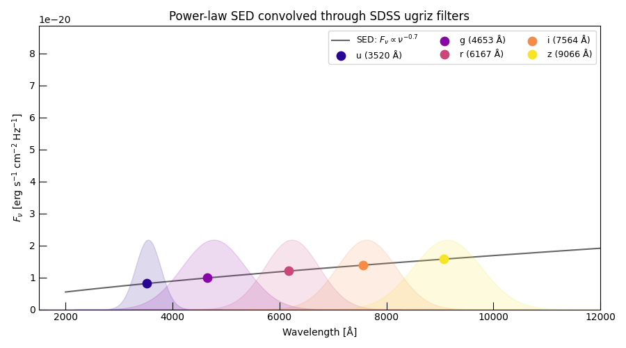
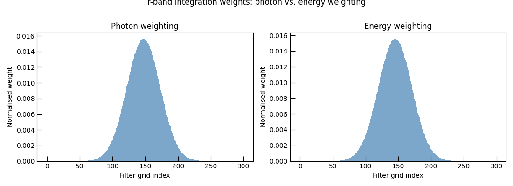

Note
Go to the end to download the full example code.
Photometric Filters: Construction and Convolution#
This example introduces the PhotometryFilter class
— the fundamental building block of Trilobite’s optical photometry system.
We cover:
Constructing a filter from a wavelength grid and a transmission curve.
Inspecting key properties: effective wavelength, equivalent width, and precomputed integration weights.
Visualising the transmission curves of a set of representative broadband filters.
Convolving a power-law SED through a filter to obtain band-averaged flux densities.
Comparing photon-weighted and energy-weighted convolution.
Relevant API references#
Imports#
import matplotlib.pyplot as plt
import numpy as np
import astropy.units as u
from trilobite.utils.phot_utils import PhotometryFilter
from trilobite.utils.plot_utils import set_plot_style
set_plot_style()
Building Filters from Scratch#
A PhotometryFilter accepts:
A wavelength grid as either a bare NumPy array in cm, or an
astropy.units.Quantityin any compatible unit (Å, nm, μm …).A matching dimensionless transmission array.
An optional
nameandweighting("photon"for CCDs,"energy"for bolometers).
Here we model five broadband filters as Gaussians approximating the SDSS ugriz passbands.
BAND_CENTERS_AA = {"u": 3543, "g": 4770, "r": 6231, "i": 7625, "z": 9134}
BAND_WIDTHS_AA = {"u": 550, "g": 1400, "r": 1200, "i": 1300, "z": 1500}
filters = {}
for band, center in BAND_CENTERS_AA.items():
width = BAND_WIDTHS_AA[band]
lam = np.linspace(center - 2.5 * width, center + 2.5 * width, 300) * u.AA
T = np.exp(-0.5 * ((lam.value - center) / (width / 2.35)) ** 2) # Gaussian FWHM ~ width
filters[band] = PhotometryFilter(lam, T, name=f"sdss-{band}")
print("Filters constructed:")
for name, filt in filters.items():
print(
f" {name} lam_eff={filt.effective_wavelength * 1e8:.0f} Å"
f" W_lambda={filt.filter_width_lambda * 1e8:.0f} Å"
f" N_grid={len(filt)}"
)
Filters constructed:
u lam_eff=3520 Å W_lambda=587 Å N_grid=300
g lam_eff=4653 Å W_lambda=1493 Å N_grid=300
r lam_eff=6167 Å W_lambda=1280 Å N_grid=300
i lam_eff=7564 Å W_lambda=1387 Å N_grid=300
z lam_eff=9066 Å W_lambda=1600 Å N_grid=300
Visualising Transmission Curves#
Each filter carries a plot() method; here we overlay all five on one
figure by passing the same axes object.
colors = plt.cm.plasma(np.linspace(0.05, 0.95, len(filters)))
fig, ax = plt.subplots(figsize=(10, 4))
for color, (band, filt) in zip(colors, filters.items()):
ax.plot(filt.wavelength * 1e8, filt.transmission, color=color, lw=2, label=band)
ax.set_xlabel("Wavelength [Å]")
ax.set_ylabel("Transmission")
ax.set_title("Gaussian approximations of the SDSS ugriz filters")
ax.set_ylim(bottom=0.0)
ax.legend(ncol=5)
plt.tight_layout()
plt.show()

Filter Properties#
The constructor precomputes normalised integration weights so that
np.dot(F_nu_on_grid, weights) returns the band-averaged flux density.
No explicit numerical integration is needed at evaluation time.
r_filt = filters["r"]
print(f"r-band filter repr: {r_filt}")
print(f" effective wavelength : {r_filt.effective_wavelength * 1e8:.1f} Å")
print(f" effective frequency : {r_filt.effective_frequency:.3e} Hz")
print(f" equivalent width λ : {r_filt.filter_width_lambda * 1e8:.1f} Å")
print(f" equivalent width ν : {r_filt.filter_width_nu:.3e} Hz")
print(f" sum(weights) : {r_filt.weights.sum():.10f} (should be 1.0)")
r-band filter repr: PhotometryFilter('sdss-r', lam_eff=6167.0 AA, weighting='photon', N=300)
effective wavelength : 6167.0 Å
effective frequency : 4.861e+14 Hz
equivalent width λ : 1280.0 Å
equivalent width ν : 1.009e+14 Hz
sum(weights) : 1.0000000000 (should be 1.0)
Convolving a Power-Law SED#
We construct a power-law SED resembling an optically-thin synchrotron source and convolve it through each filter. Three convolution paths are available:
apply()— fastest, requiresF_nuon the filter’s own grid.convolve_nu()— interpolates from any frequency grid (used here).convolve_lambda()— acceptsF_lambdaon a wavelength grid.
# Power-law SED: F_nu ∝ nu^alpha, normalised at 1e14 Hz
c_cgs = 2.99792458e10 # cm/s
nu_ref = 1e14 # Hz (≈ 3 μm, safely in the IR)
alpha = -0.7 # typical optically thin synchrotron slope
F_ref = 3.631e-20 # erg/s/cm²/Hz (0 mag in AB at nu_ref)
nu_sed = np.geomspace(3e13, 1.5e15, 2000) # Hz
F_nu = F_ref * (nu_sed / nu_ref) ** alpha # erg/s/cm²/Hz
# Convolve through each filter
F_bands = {band: filt.convolve_nu(nu_sed, F_nu) for band, filt in filters.items()}
print("\nBand-averaged flux densities for a F_nu ∝ nu^{-0.7} SED:")
for band, F in F_bands.items():
print(f" {band} F_band = {F:.4e} erg/s/cm²/Hz")
Band-averaged flux densities for a F_nu ∝ nu^{-0.7} SED:
u F_band = 8.1146e-21 erg/s/cm²/Hz
g F_band = 9.8972e-21 erg/s/cm²/Hz
r F_band = 1.2024e-20 erg/s/cm²/Hz
i F_band = 1.3866e-20 erg/s/cm²/Hz
z F_band = 1.5739e-20 erg/s/cm²/Hz
Overplotting Convolved Values on the SED#
We can visualise where each band-averaged value sits relative to the underlying SED by plotting at the filter’s effective frequency.
fig, ax = plt.subplots(figsize=(9, 5))
# Plot the underlying SED
lam_sed = c_cgs / nu_sed * 1e8 # Å
ax.plot(lam_sed, F_nu, color="0.4", lw=1.5, label=r"SED: $F_\nu \propto \nu^{-0.7}$", zorder=1)
# Overplot band-averaged values at effective wavelengths
for color, (band, filt) in zip(colors, filters.items()):
lam_eff_aa = filt.effective_wavelength * 1e8
ax.scatter(
lam_eff_aa,
F_bands[band],
color=color,
s=80,
zorder=3,
label=f"{band} ({lam_eff_aa:.0f} Å)",
)
# Shade the filter transmission (scaled to the SED range for visibility)
ax.fill_between(
filt.wavelength * 1e8,
0,
filt.transmission * F_ref * 0.6,
color=color,
alpha=0.15,
)
ax.set_xlabel("Wavelength [Å]")
ax.set_ylabel(r"$F_\nu$ [erg s$^{-1}$ cm$^{-2}$ Hz$^{-1}$]")
ax.set_title("Power-law SED convolved through SDSS ugriz filters")
ax.legend(ncol=3, fontsize=9)
ax.set_xlim(1500, 12000)
ax.set_ylim(bottom=0)
plt.tight_layout()
plt.show()

Photon vs. Energy Weighting#
The weighting scheme shifts which part of the passband receives more weight. For a steeply falling SED the difference can reach several percent.
r_photon = PhotometryFilter(
r_filt.wavelength,
r_filt.transmission,
name="r-photon",
weighting="photon",
)
r_energy = PhotometryFilter(
r_filt.wavelength,
r_filt.transmission,
name="r-energy",
weighting="energy",
)
F_p = r_photon.convolve_nu(nu_sed, F_nu)
F_e = r_energy.convolve_nu(nu_sed, F_nu)
print(f"\nPhoton-weighted r-band flux : {F_p:.4e} erg/s/cm²/Hz")
print(f"Energy-weighted r-band flux : {F_e:.4e} erg/s/cm²/Hz")
print(f"Relative difference : {abs(F_p - F_e) / F_p * 100:.2f} %")
fig, axes = plt.subplots(1, 2, figsize=(11, 4))
for ax, (filt, label) in zip(axes, [(r_photon, "Photon weighting"), (r_energy, "Energy weighting")]):
ax.bar(
range(len(filt)),
filt.weights,
color="firebrick" if "photon" in label else "steelblue",
width=1.0,
edgecolor="none",
alpha=0.7,
)
ax.set_xlabel("Filter grid index")
ax.set_ylabel("Normalised weight")
ax.set_title(label)
plt.suptitle("r-band integration weights: photon vs. energy weighting", y=1.01)
plt.tight_layout()
plt.show()

Photon-weighted r-band flux : 1.2024e-20 erg/s/cm²/Hz
Energy-weighted r-band flux : 1.1965e-20 erg/s/cm²/Hz
Relative difference : 0.49 %
Note
For most imaging surveys (ZTF, LSST, SDSS) photon weighting is the correct choice: CCDs count individual photons, so the detector response is proportional to the photon rate, not the energy rate. Energy weighting is appropriate for infrared bolometric detectors.
Total running time of the script: (0 minutes 0.858 seconds)